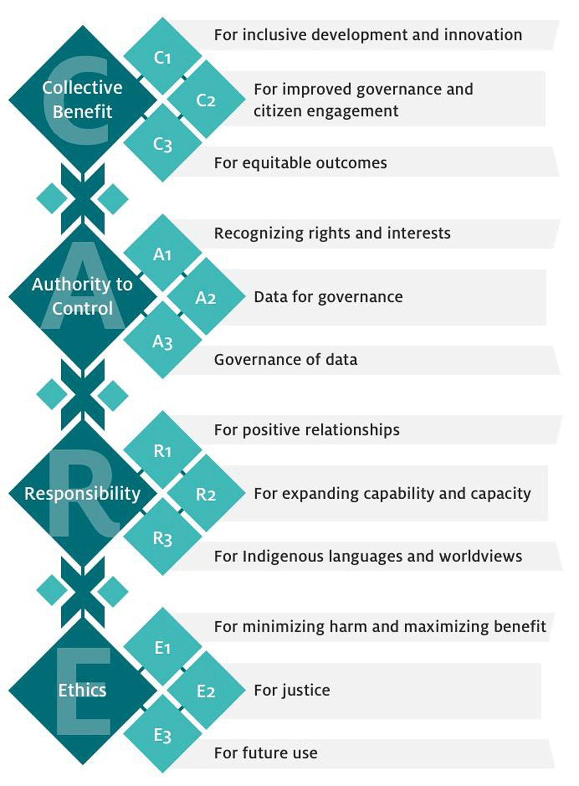

FAIR Research Data Management
A Hands-on, Actionable Workshop for Researchers
Today’s Journey
From here: “I know I should share data, but…”
To here: “I feel confident to manage and share my research data”
Workshop Goals
By the end, you will:
- Understand parts of FAIR you should and should NOT worry about
- Have practical skills for organizing, documenting, and sharing data
- Know how to find and adopt standards your field already uses
- Walk away with one concrete next step you’ll take within the next month
We will have:
Opening polls - Share experiences and build motivation
Fun quizzes - Explore concepts togethe
Micro worksheets - Make preliminary decisions for your own data
Throughout the session, the Q&A (Particify) and chat are open for any questions or comments
Use an alias name, your real name, or abstain for polls/quizzes in Particify
For worksheets and notes, you can use the shared document (link provided) or make your own notes
Part I: Why This Matters to YOU
Building motivation from shared experiences
Let’s Get Real
After the inspiring talks about open science and data sharing…
- “This sounds great, but I barely have time to do my research”
- “My data is too messy/sensitive/specific to share”
- “I don’t even know where to start”
When Good Intentions Meet Reality
Particify Room Link
Join the interactive session:
We’ll use this for polls and collaborative activities throughout the workshop.
FAIR Principles
2014: Researchers from different fields meet in Leiden “We’re all having the SAME problems with data”
2016: FAIR principles published 1
2025: You’re here because:
- Your funder requires it (or will soon)
- You’ve lost data/time to chaos
- You want to do better science
Principles vs. Prescriptions
Why FAIR Works
| Standards Tell You HOW | Principles Tell You WHAT |
|---|---|
| Use metadata schema X | Make data Findable |
| Store in repository Y | Make data Accessible |
| Use format Z | Make data Interoperable |
| Include license X | Make data Reusable |
Principles provide flexibility: you decide the best way to achieve them given your context
Part II: Making FAIR Tangible
From abstract principles to concrete actions
FAIR by Design
…by integrating the FAIR principles into every stage of your research process, from planning to execution to sharing and reuse.
Data Life Cycle Approach to FAIR

Data Management Plan Session
Related Session Alert
Wednesday 17th September, 13:15 - 14:15: Research Data Management Plans
The FAIR Data Principles
F1. (meta)data are assigned a globally unique and persistent identifier
F2. data are described with rich metadata
F3. (meta)data are registered or indexed in a searchable resource
F4. metadata specify the data identifier
A1. (meta)data are retrievable by their identifier using a standardized protocol
A1.1 the protocol is open, free, and universally implementable
A1.2 the protocol allows for authentication and authorization where necessary
A2. metadata are accessible, even when the data are no longer available
I1. (meta)data use a formal, accessible, shared language for knowledge representation
I2. (meta)data use vocabularies that follow FAIR principles
I3. (meta)data include qualified references to other (meta)data
R1. (meta)data have a plurality of accurate and relevant attributes
R1.1. (meta)data are released with a clear and accessible data usage license
R1.2. (meta)data are associated with their provenance
R1.3. (meta)data meet domain-relevant community standards
The FAIR Data Principles: Metadata Powers Everything
F1. (meta)data are assigned a globally unique and persistent identifier
F2. data are described with rich metadata
F3. (meta)data are registered or indexed in a searchable resource
F4. metadata specify the data identifier
A1. (meta)data are retrievable by their identifier using a standardized protocol
A1.1 the protocol is open, free, and universally implementable
A1.2 the protocol allows for authentication and authorization where necessary
A2. metadata are accessible, even when the data are no longer available
I1. (meta)data use a formal, accessible, shared language for knowledge representation
I2. (meta)data use vocabularies that follow FAIR principles
I3. (meta)data include qualified references to other (meta)data
R1. (meta)data have a plurality of accurate and relevant attributes
R1.1. (meta)data are released with a clear and accessible data usage license
R1.2. (meta)data are associated with their provenance
R1.3. (meta)data meet domain-relevant community standards
That’s metadata in 13 out of 15 sub-principles!
What Is Metadata, Really?
Metadata for Researchers
Metadata Framework adapted from Sobolev et al. (2014). Integrated platform and API for electrophysiological data. Frontiers in Neuroinformatics, 8:32. DOI: 10.3389/fninf.2014.00032
The FAIR Data Principles
F1. (meta)data are assigned a globally unique and persistent identifier
F2. data are described with rich metadata
F3. (meta)data are registered or indexed in a searchable resource
F4. metadata specify the data identifier
A1. (meta)data are retrievable by their identifier using a standardized protocol
A1.1 the protocol is open, free, and universally implementable
A1.2 the protocol allows for authentication and authorization where necessary
A2. metadata are accessible, even when the data are no longer available
I1. (meta)data use a formal, accessible, shared language for knowledge representation
I2. (meta)data use vocabularies that follow FAIR principles
I3. (meta)data include qualified references to other (meta)data
R1. (meta)data have a plurality of accurate and relevant attributes
R1.1. (meta)data are released with a clear and accessible data usage license
R1.2. (meta)data are associated with their provenance
R1.3. (meta)data meet domain-relevant community standards
The FAIR Data Principles
F1. (meta)data are assigned a globally unique and persistent identifier
F2. data are described with rich metadata
F3. (meta)data are registered or indexed in a searchable resource
F4. metadata specify the data identifier
A1. (meta)data are retrievable by their identifier using a standardized protocol
A1.1 the protocol is open, free, and universally implementable
A1.2 the protocol allows for authentication and authorization where necessary
A2. metadata are accessible, even when the data are no longer available
I1. (meta)data use a formal, accessible, shared language for knowledge representation
I2. (meta)data use vocabularies that follow FAIR principles
I3. (meta)data include qualified references to other (meta)data
R1. (meta)data have a plurality of accurate and relevant attributes
R1.1. (meta)data are released with a clear and accessible data usage license
R1.2. (meta)data are associated with their provenance
R1.3. (meta)data meet domain-relevant community standards
Focus on the blue and metadata, adopt what exists, and let repositories handle the workings of the red
Your Three-Part Action Plan
Based on what’s actually your responsibility:
Adopt Recommended Tools & Standards: Adopt the recommendations from today and/or find and use what your field already created
Document Your Data Well: Create README, methods, and data dictionary
Make Key Decisions: Repository, license, organization, format, sharing level
That’s it. Everything else is handled by the tools you choose.
Part III: Managing Data for Your Future Self and Collaborators
Creating FAIR Research Data
Files and Folders: Everyday Practices
Research data management can be chaotic
- Inconsistent file naming
- Disorganized folder structures
- Missing documentation
- Confusion about versions
- Lost files and wasted time
Folder Structure
- Check whether research group level conventions exists
- If not, create and DOCUMENT a simple, consistent folder structure
You may set it up a folder structure by:
- Data type (text, images, models, etc.)
- Time (year, month, session, etc.)
- Project phase (planning, execution, analysis, etc.)
- Experimental run
- Subject (e.g., species, sample type)
- ..etc.
…there is no one right answer.
Take a decision, document it and be consistent.

Example Folder Structure
.
├── 01_data/ # All project data
│ ├── raw/ # Original, immutable data (do not modify)
│ ├── external/ # Data from outside sources (e.g., public datasets)
│ ├── processed/ # Cleaned/transformed data (outputs from scripts)
│ └── README.md # Data sources, descriptions, processing steps
├── 02_analysis/ # Analysis scripts and utilities
│ ├── 01_data_cleaning.R # Example: data cleaning script (R)
│ ├── 02_exploratory_analysis.py # Example: exploratory analysis (Python)
│ ├── 03_modeling.R # Example: modeling script (R)
│ ├── utils/ # Reusable functions or modules
│ └── README.md # Analysis workflow and script purposes
├── 03_manuscript/ # Manuscript drafts, figures, documents
│ └── README.md # Track manuscript progress, submission plans, authors
├── 04_presentation/ # Materials for talks, posters, slides
│ └── README.md # Summarize presentations (title, date, format)
├── 05_misc/ # Supplementary files (proposals, notes, etc.)
│ └── README.md # Describe contents
└── README.md # Project overview and setup instructionsReuse this template from: https://github.com/lmu-osc/research-project-template
File and Folder Naming
The goals of a good naming convention would be:
- identify the content of a (data)file without opening it
- enable easy searching and filtering
- include relevant metadata (e.g., date, version)
- be consistent and predictable
…again, there is no one right answer.
Take a decision, document it and be consistent.
Take a decision, document it and be consistent.
There are no right answers here, only trade-offs.
… but, there are some best practices that will prevent some common pitfalls
Best Practices: What We’ve Learned from Collective Pain
- don’t use spaces, periods, hyphens or other special characters & , * % # ; * ! @$ ^ ~ ’ { } [ ] ? < >.(including language-specific characters) in names
- use underscores (_) or camelCase instead
- limit the filename to 32 characters
- avoid deep folder hierarchies
- write dates and numbers in standardized formats, use zero padding to get easily readable file listings
- e.g., YYYY-MM-DD for dates, 001 for numbers
- use consistent patterns for similar types of files
- separate raw data from processed data to ensure raw data is never altered
If you can’t find it in 30 seconds, your system needs work.
If a computer can’t follow your pattern, you’re creating future work.
Files and Folders: Versioning

- Establish a versioning strategy
- Use clear, consistent naming conventions for versions (e.g.,
v1,v2, etc.) - Document changes in a changelog file
- Automate versioning with tools like Git
Related Session Alert
Wednesday 17 September, 14:30-17:30: Version control in RStudio with Git
File Formats: Strategic Trade-offs
Ideally, your format would be…
- …readable by humans with a simple editor
- …readable with many programs
- …easy to understand, low complexity
- …small (storage space)
- …quick to read (performance)
But usually you have to choose between…
- performance (binary) vs accessibility (text)
- features (Excel) vs universality (CSV)
- convenience (today) vs longevity (decades)
File Format Decisions

Use proprietary formats for work if needed, but convert to open formats for sharing and archiving
Why avoid closed proprietary formats?
- undocumented specifications
- single software dependency
- company control over access
- hidden metadata risks
- long-term obsolescence
Softwares may change, but your data survives
Recommended Formats by Use Case
Documentation
- Plain text (.txt)
- HTML, XHTML, Markdown
- PDF/A-1 - archival standard
- Maybe: RTF (.rtf), ODT (.odt), docx
Tabular Data
- CSV - comma-separated values
- TSV - tab-delimited
- Maybe: ODS (.ods), xlsx
Nested Data
- JSON - structured, web-friendly
- XML - complex hierarchies
Further formats
- NetCDF, HDF5 - self-describing
- PNG, JPG - images
- Domain-specific standards
Start with bold formats, fall back to “maybe” formats only if needed
Data Dictionary: Making Numbers Meaningful
- Just numbers in cells
- “Obviously” meaningful to you
- Gibberish to everyone else
- Scientific value = minimal
id: Participant ID (001-150)
age: Age in years at testing
score: Beck Depression Index (0-10)
group: Treatment (A=CBT, B=control)
time: Reaction time in milliseconds- Units, ranges, conditions defined
- Measurement protocols clear
- Valid values specified
- Reusable across contexts
Data dictionaries capture the unavoidable details that transform digits into science.
Hard Metadata: Can somebody replicate this?
The methodological details that determine whether your scientific findings can be replicated
- What equipment you used (exact models)
- How you calibrated it (specific procedures)
- When you collected data (dates, times, conditions)
- Why you made specific methodological choices
- Which software versions and settings
- Where raw data came from and how it was processed
Example Hard Metadata Elements: Biology/Medicine
- Samples: Collection time, storage temperature, handling procedures
- Equipment: Calibration data, model numbers
- Reagents: expiration dates, storage conditions, identifiers
- Protocols: Timing, volumes, temperature, order of operations
Would a competent researcher in your field be able to replicate your study from your metadata alone?
Methods Section and Hard Metadata
Journal Methods Section:
“Participants completed questionnaires in a quiet laboratory setting. Data were collected using Qualtrics and analyzed using R statistical software.”
Hard Metadata You Need to Capture:
- Questionnaire: Beck Depression Inventory-II, version 2.1 (Beck et al., 1996)
- Environment: Sound-isolated room, 22°C, fluorescent lighting, 10am-4pm sessions
- Platform: Qualtrics XM (version 2024.3), randomization seed: 12345
- Software: R 4.3.2, tidyverse 2.0.0, lme4 1.1-35
- Computer: Dell OptiPlex 7090, Windows 11 Pro, 1920x1080 display
- Procedure: 15-min consent, 20-min questionnaire, 5-min debrief
READMEs: Can somebody understand this?
The human context that bridges your research logic with others’ understanding
- Can someone understand why I organized my data this way?
- Would they know what questions drove this research?
- Can they navigate my files without getting lost?
- Do they understand my methodological choices?
- Would they know how to properly cite and use this work?
Proper Metadata: Can somebody find this?
The catalog information that makes your research discoverable
- Who created the dataset?
- What do the data files contain?
- When was the dataset generated?
- Where was the dataset generated?
- Why was the dataset generated?
- How was the dataset generated?
- What research is this dataset connected to?
- Can this dataset be reused?
- What keywords describe this dataset?
Activity : Quiz
Join the interactive session:
- Each question has only one correct answer
- Feel free to use an alias name, your name or abstain
- There is no time limit, but try to answer intuitively, we will try to give 15 seconds per question
Part IV: Creating Research Data for Unexpected Reuse
Making Data Interoperable & Reusable
Why should I care?
The Hidden Work in Data Reuse
You’ve made all these decisions:
- File organization strategy
- Naming conventions
- Data formats
- Variable definitions
- Missing data codes
- Choice of hard metadata elements
Additionally, hopefully you’ve:
…written scripts for a reproducible workflow (something we will cover later in the week)
But every researcher makes these same decisions independently
Even excellent data requires significant effort to understand and reuse
Organizational Standards: Integrating Data to Your Analysis
The dream: Download data, run your analysis script immediately
No manual adjustments, no data wrangling, no guesswork
The reality: Spend hours figuring out folder structures and file naming
An organizational standard would provide:
- Standardized folder hierarchies
- Consistent file naming patterns
- Predictable data locations
such that we have…
…automated tools can navigate data
Organizational Standards: BIDS Success Story
Before and after BIDS organization of neuroimaging data https://bids.neuroimaging.io/
Reporting Guidelines: What’s Actually Essential?
You have a brilliant idea about reusing existing data for a new analysis
You hope that the data provider recorded the sex of the participants, because you want to study sex differences in brain activity
The reality: They only recorded the age, because that’s what their analysis needed
- Checklists of essential methodological details
- Standardized metadata elements
- Templates for documenting experiments
Some helpful resources:
- EQUATOR Network - reporting guidelines for medicine and health research
- CONSORT (clinical trials)
- STROBE (observational studies)
- PRISMA (systematic reviews)
- ARRIVE (animal research)
- ..etc.
- MIAME and MINSEQE - microarray and sequencing experiments
Communicating About Concepts
Shared Vocabularies: Communicating well
You search for datasets with “statistical models” and get:
- Fashion models
- Airplane models
- Mathematical models
- Animal models
- Conceptual models
The word “model” is useless for finding what you actually need
A shared vocabulary would provide:
- Precise definitions: “linear regression model” vs “animal disease model”
- Standardized terms your field actually uses
- Machine-readable categories
Some helpful resources:
- Wikidata - generic, multilingual vocabulary
- NCBI BioPortal - comprehensive collection of biomedical ontologies
- NCBI Taxonomy - organisms
- Gene Ontology (GO) - molecular biology
- MeSH terms - medical research
- ChEBI - chemical entities
When No Standards Exist: Finding Your Field’s Champions
No established standard in your niche?
Look for data sharing pioneers:
- Researchers who consistently share well-organized data
- Labs with detailed data documentation practices
- Early adopters of open science practices
- Active participants in data sharing initiatives
Adopt and improve their approaches
These informal practices can become standards:
- Start small with your research group
- Share your solutions publicly
- Collaborate with other early adopters
- Eventually formalize into community standards
LMU-OSC Open Research Practice Guide
Ihle et al. (2025). cBRAIN open research practice guide (1.0). Zenodo. DOI: 10.5281/zenodo.16262261
Activity: Build Your FAIR Toolkit
Goal: Discover what your research community has already created
5-Minute Toolkit Hunt with RDMKit
- Go to: rdmkit.elixir-europe.org
- Navigate to: “Your Domain” section
- Find: Your research area or closest match
- Note: Organizational standards, reporting guidelines, vocabularies, and other solutions
- Backup: If nothing fits, check “Your Tasks” section and choose what is most relevant to you
Remember:
- This isn’t about finding the perfect solution
- It’s about discovering what already exists
- Even partial solutions count
- Take notes thinking about your own research data
Your FAIR Toolkit Worksheet
My research field/closest match: _________________________________
One thing I discovered that could help my data organization: _________________________________
(Could be: field-specific standard, general practice, tool, or approach)
One resource for documenting my data: _________________________________
(Could be: reporting guideline, metadata schema, journal template, or documentation approach)
One way to improve terminology consistency: _________________________________
(Could be: controlled vocabulary, glossary creation, existing terminology, or team agreement)
Be FAIR and CARE

- FAIR: “Can people access this data?”
- CARE: “Should they? How do communities benefit?”
- Essential for Indigenous data and community-centered research
Part V: Sharing Your Data with the World
Licensing: Setting the Rules for Your Well-Organized Data
You’ve done the hard work:
- Organized files systematically
- Created comprehensive metadata
- Documented everything clearly
Now the final step: How do you want others to use it?
Without a license → Others avoid your data (even with good intentions)
License Choice
Many license options exist, but Creative Commons is the most widely used in research
Rule of thumb: Choose the LEAST restrictive license
Why? Maximum reuse = Maximum impact
Two Ideal Choices
- CC0 if your data isn’t copyright protected (most measurement data)
- CC-BY if copyright exists (surveys, interviews, creative work)
CC BY - simply “cite me if you use my data” - the norm in science
Why Avoid More Restrictive Licenses?
- Different restrictions = Can’t combine datasets
- Blocks meta-analyses and follow-up research
- Creates legal headaches for everyone
CC BY solves this: global use, simple credit.
Choosing a repository: Your Data’s Home
Your data is organized, licensed, and ready to share
But where does it live?
Not all repositories are created equal
Repository Choice: Match Your Needs
- Field-specific visibility? → Disciplinary repositories (preferred option)
- Sensitive data + compliance? → Institutional repositories (Open Data LMU - personal consultation advantage)
- Active collaboration? → Platforms with version control (OSF, GitHub)
- Broad discoverability? → General repositories (Zenodo, Figshare)
What Makes a Good Repository?
- Persistent identifiers (DOI assignment)
- Clear preservation policies (will it still exist in 10 years?)
- Good metadata support (helps with discoverability)
- Community trust (CoreTrustSeal certification is a good sign)
Also crucial: The location where your data is stored
When in doubt: Zenodo is a solid default choice
Find YOUR Repository Now
3-Minute Repository Hunt:
- Go to: re3data.org
- Type your research area in the search box
- Browse top results, pay attention to “Country”, “Subjects”
- Make a search for “Zenodo”, “OSF”, or “Figshare” if nothing field-specific appears
Find YOUR Repository Now Worksheet
My repository choices:
Field-specific option: _________________________________
General backup option: _________________________________ (Default: Zenodo if no field-specific option works)
From Repository to Recognition: Persistent Identifiers
You’ve chosen a repository and license
But how do you ensure people find your data and you get credit?
PIDs = Permanent addresses that never break
The Four PIDs You Need to Know
- DOI (Digital Object Identifier) → What you created (datasets, papers) - assigned by repository automatically
- ORCID (Open Researcher and Contributor ID) → Who you are (your researcher identity) - you create and update profile - orcid.org
- RRID (Research Resource Identifier) → What you used (materials, software) - you look up existing identifiers - rrid.site
- ROR (Research Organization Registry) → Where you work (institution) - institutional identifier, usually automatic - ror.org
Start simple: DOI + ORCID covers most needs
Data Availability Statement (DAS): Connecting All the Pieces
You’ve organized, licensed, chosen a repository, and got PIDs
But when someone reads your paper, how do they find your data?
A clear “Data Availability Statement” (DAS) connects all the pieces
Data Availability Statement (DAS) Examples
Ineffective Statements
- “Data available upon request”
- “Contact corresponding author”
- “Data will be shared on reasonable request”
Effective Statements
- “Data: https://doi.org/10.5281/zenodo.1234567 (CC0)”
- “Code: https://github.com/user/project (MIT)”
- “Materials: https://osf.io/xxxxx (CC-BY)”
Many journals now require specific DAS formats - check guidelines!
Beyond DAS: Dataset Publications
Data Papers: Publication of data along with a “Data Descriptor” or “Data Note” describing the dataset
- Does not require novel findings
- Focuses on data quality and reuse potential
- Peer-reviewed and citable
- Specific journals: Scientific Data, GigaScience, F1000Research
Making data a first-class research output!
Wrap-Up: Your FAIR Data Journey
First Simple FAIR Checklist
Planning Phase (Findable + Reusable)
Active Research (Interoperable + Accessible)
Pre-Publication (All FAIR principles)
Publication (Findable + Accessible)
OPTIONAL Follow-Up
Self-guided FAIR evaluation tutorial
Practice applying FAIR principles by evaluating real published datasets. You’ll work through:
- Publication - Can you associate the dataset with its publication? Are the licenses clear?
- Documentation - Is the metadata sufficient for reuse? How about the README and data dictionary?
- Organization - Can you navigate and understand the data structure?
Why do this?
This hands-on practice helps you recognize FAIR (and not-so-FAIR) data - making you a better data consumer and producer.
Your Commitment
Not “I’ll try to be more FAIR” but something like:
- “I’ll rename all files in my current project”
- “I’ll create a README for my last dataset”
- “I’ll upload my pilot data to Zenodo”
- “I’ll document my variable names”
My commitment: _________________________________
Tell your neighbor - accountability helps
Thank You! Questions?

FAIR Research Data Management | LMU Open Science Summer School 2025 | 1 hour 45 minutes